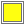
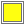
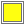

 
Program 1
|  | The fac function. | Slide 2 : 3 Program 1 |
;; Calculate the factorial of n. ;; .parameter n An integer ;; .pre-condition The integer must be non-negative. ;; .returns n! (define (fac n) (if (= 0 n) 1 (* n (fac (- n 1))))) |